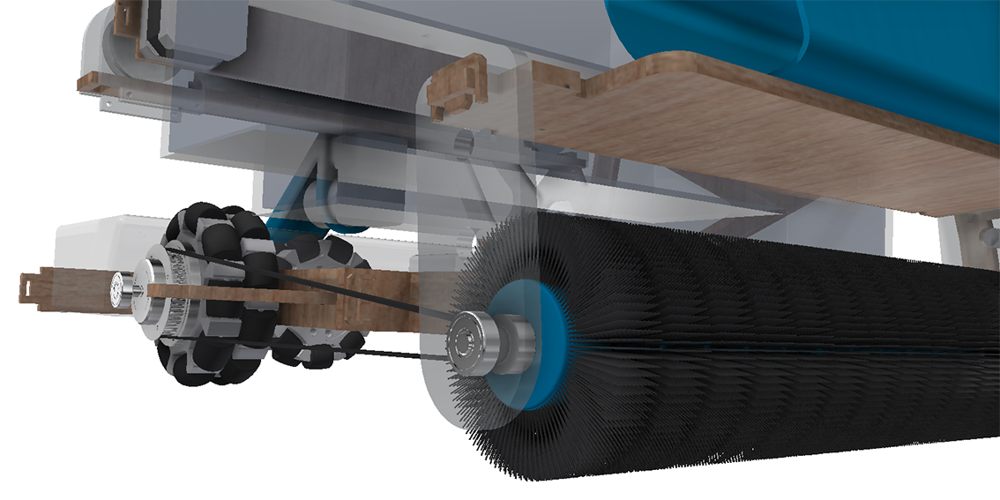

Maintaining street cleanliness is an ongoing complication for many cities in the UK. With the increases in population, especially in densely populated areas such as London, traditional methods of waste management are slowly becoming obsolete. Automation is one such technology that has bridged the disparity between the growing public demand and supply constraints. Currently, there are no widely availble autonomous public cleaners on the market and none that specifically target pavements.
The aim of this project is to design an autonomous vehicle capable of cleaning pavements of litter, gum and harmful particulate matter. The product will be sold to councils as an effective solution to maintaining street cleanliness with minimal additional investment.
Common types of litter found on streets were investigated through government research reports. these informed the cleaning processes and initial concepts greatly as different manipulators were required for different types of waste. It was decided that particulate matter and gum were to be targetted due to the adverse effects on health, economy and social aspects.
Current Autonomy technology was investigated. From this, a simple local autonomy system was devised, using ultrasonic sensors coupled with infrared temperature sensors to differenciate obstacles.
An in depth study of stakeholders (council, tax payers and street cleaners) was carried out to discover their needs. In order to create a well accepted public robot, the aesthetic appearance must match tax payer expectations. Thus a product semantics study was conducted with a focus group to establish the desired aesthetics. The bath council spend was expenditure documents were studied to calculate the price of the autonomous cleaner. Street cleaers perfoms many tasks as well as sweep street. Studies have found that in hazardous weather conditions, many cleaners experience occupational injuries due to roadside slips and falls. Hence the autonomous cleaner would alleviate the some street cleaning activities for the staff while reducing dangerous working conditions.
There are no current direct competitors and all previously designed cleaners have not succeeded in the market. However, though studying non-autonomous devices, existing effective cleaning techniques were found. The two technologies that inspired the final solution were street washing, capable of removing 60% of harmful particulate matter, and modern portable gum removal solutions.
Modern street washing systems use water sprays ahead of gutter brooms which rotate at above 2500rpm. The combination of water and agitation from the broom sufficiently releaset the matter from the pavement. Street cleaning vehicles then absorb the fluid through a regenerative air system. Pavement cleaning use high pressure water to both wet and agitate the pavement, releasing the matter and directing the resultant fuid to the drains.
Effective portable gum removal systems exist and use gum removal solution, containing non-ionic surfactant, heated to 90 degrees. The solution is applied to the gum for a few seconds, softening it and loosening its grip from the pavement. Following this, it is agitated through a tough bristled brush removing it from the pavement. Excess fluid is soaked up through a mob or brushed away.
It is suggested that the brush maintains its structure as the gum is 'vaporised' by the solution, hence does not remain on the brush. Hands on research must be done to confirm this, but as of now, research into this existing technology remains undone due to time and budgetary constraings.
Multiple concepts were evaluated against a specification and three mechanisms were chosen to be developed. For litter collection, a front roller designed to pick up and compress common types of waste . The waste it then further compacted and fed into an on-board storage for space efficiency.Due to the synergy between street washing and gu removal, a compact mechanism capable of performing both tasks was designed. At the leading edge, a heating gum removal solution will be applied to 'release' the gum from the pavement. An on-board water storage constrantly feeds a rotating rear brush that performs both the street cleaning and gum removal tasks simultaneously.
A design to incorporate both mechanisms was developed. The cross section of the developed design can be seen on the left. Due to the scope of the project the litter collection aspect was abandoned.
The design of the drivetrain was changed from a simple rear wheel drive with two DC motors. An omdirectional drivetrain allows for more methods of movement. This allows for greater positional accuracy and more predictable movement. Reducing the likelihood of accidental collisions with the general public.

A scale cardboard model was produced in order to undertand the geometry of the product, possible structurally weak areas and how the components could be implimented into the design. Using the model for scaling, a accurate CAD model of the proof of principle prototype was produced (below).
The drivetrain consisted of 4 omnidirectional wheels separately driven by geared DC motors allowing for a greater number movement methods.
The wheels are directly driven through a coupling and a bespoke shaft. A timing pulley is then attached to the outside of the wheel. This was used to drive the rear brush bar though a timing pulley.

I machined the bespoke shafts and couplings out of mild steel and 3D printed the timing pulleys. The components were assembled onto a laser cut MDF chassis.
The drivetrain is controlled by an Arduino through 4 h-bridges. A voltage regulator reduced the 12V Li Po battery supply to 5V for the h-bridges.
Control software was written on MATLAB Simulink due to its synergy with hardware. A truthtable was used to translate input signals from a analogue stuck into motor movement.

The motors could not drive the vehicle reliably due manufacturing tolerances and faults in the electronics. However, functioned to prove the possibility of greater mobility.
The gum removal system consisted of gum detection and spray head placements. The spray head consisted of a motor pump connected to a heating chamber and pressure valve. When he gum removal solution is heated to the required temperature, the motor pump activated and pumps the liquid into the pressure valve which build up pressure. When suffient pressure reached, a consistent volume of liquid is expelled at a predictable speed. Due to time constraints, this aspect of the design was not created hoever was designed.

The machine vision, spray head placement and system autonomy were developed. Machine vision was written on Python OpenCV and implimented through a JeVois camera module. The JeVois was used as it contained its own microporcessor, capable of processing pythong code, allowing for detection and reaction to its environment.


Machine vision code used edge, brigtness and shape detection to differenciate the gum from its surrounding area. Initial tests with colour detection was attempted however unsuccessful. In future iterations, it would be ideal to also impliment colour detection for verifivation as brightness detection alone has difficulty reliably sensing gum.

The camera applies an edge detection followed by a threshold filter to determine the bright areas of the picure. Within this image, verticies are placed. The number of joined vertices dictate the shape (i.e. 3 = triangle). With a specificed number of verticies, unwanted shapes can be filtered out until a shape resembling a circular gum stain is detected. The coordinated of the detected pieces of gum are then serially sent the the arduino.

A rear brush, with height controlled by two servos connected a CAM, provides agitation, following the gum removal solution application, removing the gum from the pavement.

The rear brush is linked to the drivetrain through a step-up pulley system, so as the robot moves forward, the brush rotates at a higher velocity, lowered and agitates the pavement.
Gantry control code was made through use of a state machine. Depending on the coordinated recieved, the values would be translated into rotation required by the stepper to align the spray head with the dried gum.

Manual coordinate entry was intially done to test the system and the design was improved. Serial communication was then established between the JeVois and arduino controlling the stepper motor. The data was processed through a truth table.

The output of the data conversion code was input into the state machine of the gantry control code. This created a fully autonomous detection and movement system.

The drivetrain was also incorporated into the autonomy. The system successfully functioned autonomously in a straight line.
The system was then tested outside in an uncroncrolled environment. It had difficulty extinguishing between bright spots in the pacement and gum. Many faults were found and improved upon in the final design.

The street washing mechanism consists of the rear brush bar and a water tank. The water tanks feeds the rear brush consistently thorugh a CAM connected to a servo. This allows for a constantly wat rear brush providing effective street washing and thus efficient particulate matter removal.
Due to time contraints, this aspect of the design was not fully realised. However, the dimensions and capacity of the water tanks was developed to ensure the needs of the design specification were fulfilled.
The final design improved upon the faults seen in the prototype. The main faults of concern were the effect of an uncontrolled environment and time delays seen in the system due to the microprocessor clock speed.

The final design consisted of three modules each controlled by a separate microprocessor, eliminating time delays. The machine vision was housed within a casing to create a controlled environment for gum detection, increasing detection reliability.


Amongst a host of other design changed, I am confident the final design, is manufactured to a hight quality, can reliably clean the streets of particulate matter and gum stains. However a system of charging docks, by converting smart bins into the robot hubs for example, must be created to support the system. The hubs must also offer refilling of gum removal solution and water in the water tank as well as testing the system for faults and communicating errors to mission control. These are all part of required future work.